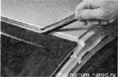

Ветровое (лобовое) стекло заменаДля выполнения работы потребуются помощник, а также: — острозаточенный нож; — пистолет для нанесения клея; — струна для резки клея-герметика стекла; — отапливаемое помещение, в котором можно оставить автомобиль без движения на время высыхания клея; — ремонтный набор для вклеивания стекла и приспособление для нанесения клея. Набор состоит из тубы с клеем-герметиком, активатора для обезжиривания поверхности, грунта, ткань для обезжиривания и кисточки для нанесения грунта.
Поскольку материалы, выпускаемые разными производителями, могут отличаться, перед выполнением работы следует ознакомиться с инструкцией, прилагаемой к ремонтному набору. Комплекты (от разных производителей) могут быть дополнены дистанционными прокладками под стекло и струной для резки клеевого шва. Струна очень часто рвется. Ее можно приобрети отдельно, но, как правило, в комплекте с ручками. В крайнем случае можно воспользоваться леской или сварочной проволокой диаметром 0,8 мм от полуавтомата типа «Кемпи». Последовательность выполнения 1. Подготавливаем автомобиль к выполнению работы. 2. Снимаем поводки стеклоочистителей. 3. Снимаем решетки воздухопритока. 4. Снимаем внутренне зеркало заднего вида. 5. Снимаем накладки передних стоек и переднюю накладку панели приборов. 6. Открыв передние двери, с каждой стороны автомобиля снимаем верхний уплотнитель двери до уровня чуть выше ветрового стекла. 7. Снимаем уплотнитель с верхней кромки ветрового стекла. 
8. Поддевая отверткой, снимаем два регулировочных клипа. 9. Кусачками откусываем отрезок струны длиной около метра. Струной протыкаем клей-герметик и заводим конец струны в салоп. 10. Надеваем на концы струны ручки. При отсутствии специальных ручек струну можно завязать на ручки отверток или на деревянные бруски. 11. Вместе с помощником струной (как двуручной пилой) разрезаем шов клея по всему периметру стекла. 12. Снимаем стекло с автомобиля и удаляем с пего кронштейн зеркала заднего вида. 13. Острым ножом аккуратно срезаем остатки клеевого шва с кузова (допустимая остаточная толщина шва не более 2 мм). 14. Уложив новое стекло на ровную поверхность, обезжириваем крашеные края стекла активатором (из ремонтного набора). 15. С помошью тампона наносим по периметру стекла грунт. 16. Аналогичные операции повторяем на оконном проеме кузова. 17. Укладываем в нижней части рамки ветрового стекла две дистанционные прокладки. Если дистанционные прокладки заменили новыми, убедитесь, что их толщина, как у старых прокладок. При необходимости срежьте лишнюю часть ножом. 18. Надеваем на верхнюю кромку стекла уплотнитель. 19. По периметру стекла равномерно наносим клей-герметик, отступив 8—10 мм от кромки. Клей-герметик наносим валиком высотой 10—12 мм. Допускается наносить клей-герметик на фланец оконного проема кузова. 20. Укладываем на рамку ветрового стекла, так чтобы расстояние правой и левой кромок до отбортовки на стойках рамки было равномерным. 21. Устанавливаем клинья и поджимаем ими стекло так, чтобы верхний уплотнитель стекла прижался к кромке крыши кузова. 22. Прижимаем стекло к рамке ветрового стекла. 23. Открываем окна передних дверей и оставляем автомобиль без движения на время высыхания клея-герметика (см. инструкцию). В течение 7—8 часов исключите любые действия, связанные с риском смещения ветрового стекла. Желательно увеличить время перед началом эксплуатации автомобиля до суток. Оптимальная прочность клеевого слоя наступает через 4-6 суток (в зависимости от погодных условий). 24. Устанавливаем снятые при выполнении подготовительных операций, детали. Приклеиваем кронштейн к новому стеклу и устанавливаем па него зеркало заднего вида. |